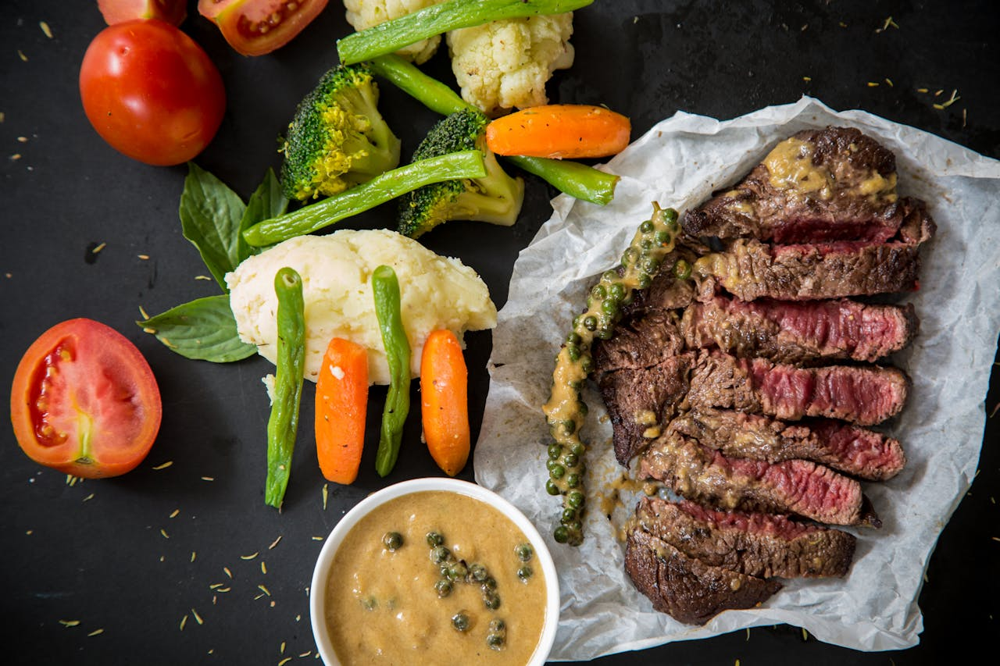
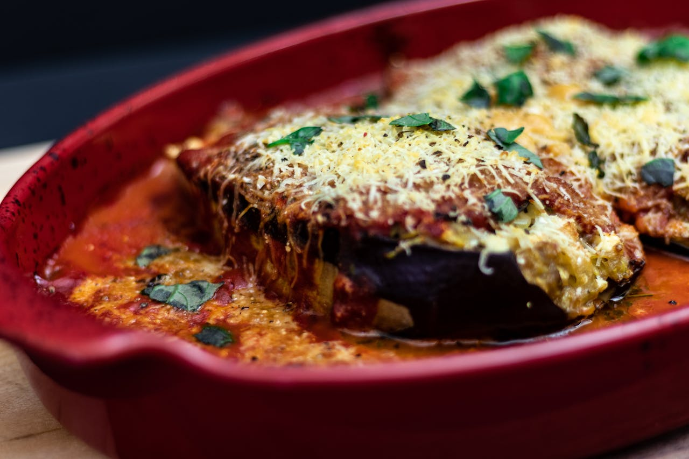
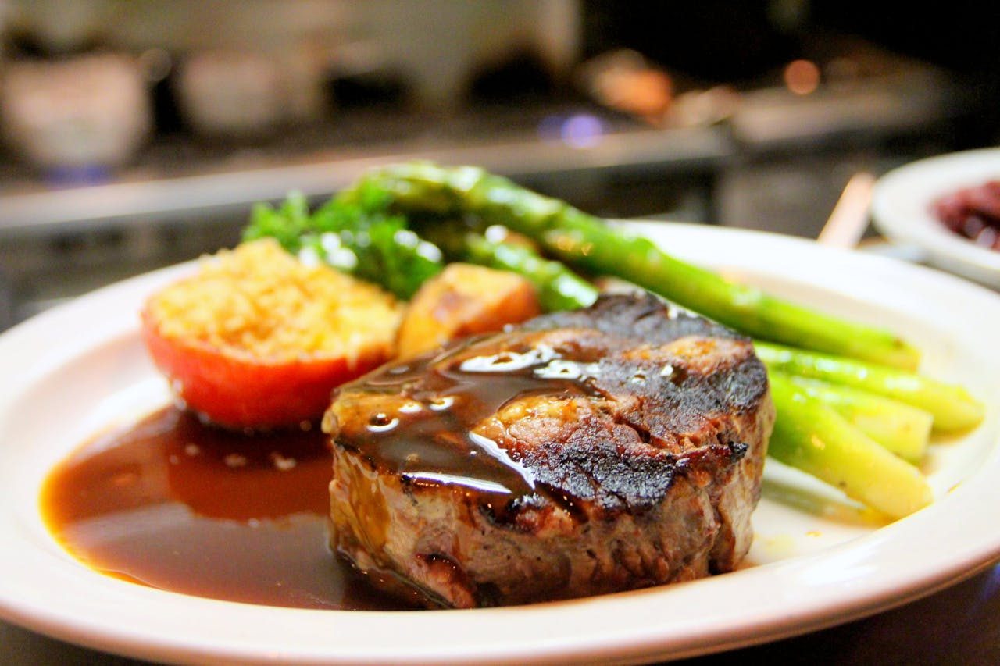
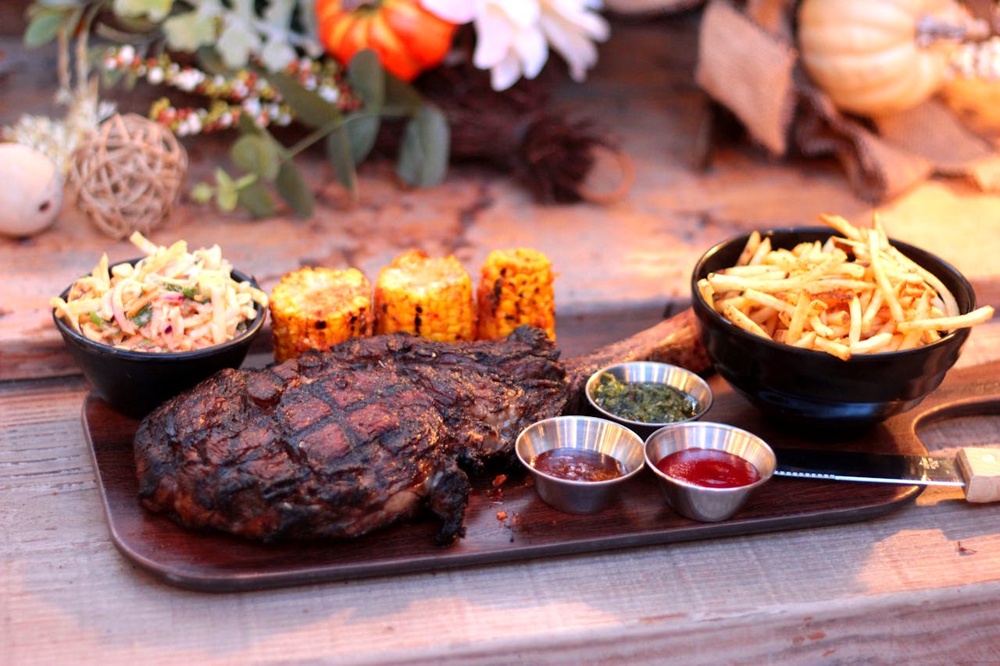
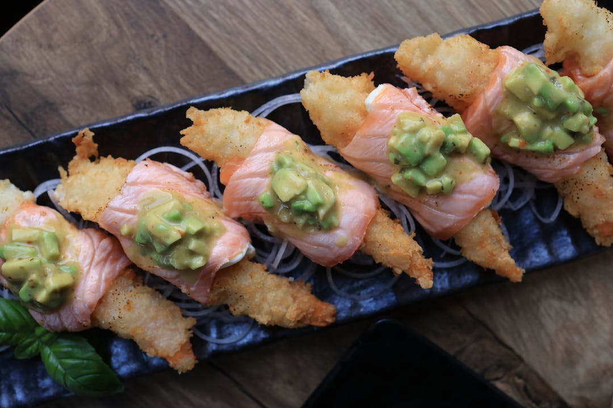
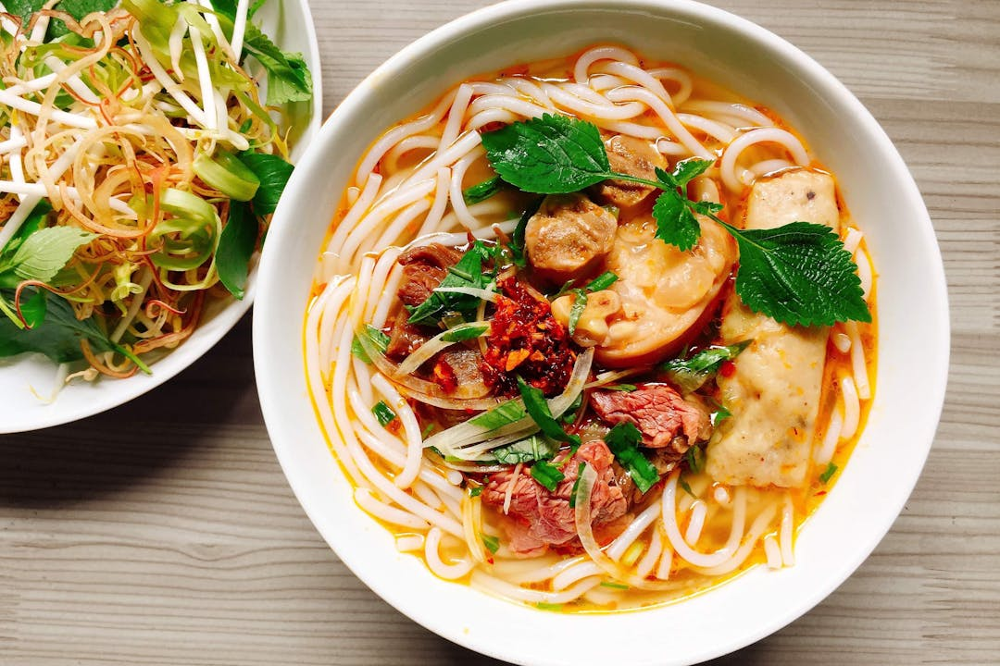

<!DOCTYPE html>
<html lang="en">
<head>
    <meta charset="UTF-8">
    <meta name="viewport" content="width=device-width, initial-scale=1.0">
    <title>Global Gourmet</title>
    <link rel="stylesheet" href="stiloprueba.css">
    <link rel="icon" href="imagenes/favicon.ico">
</head>

<body>
    

</html>

  
  <div class="smooth">
    <div class="header">
      <ul>
        <li><a href="#home">Inicio</a></li>
        <li><a href="#about">Nosotros</a></li>
        <li><a href="#contact">contactanos</a></li>
      </ul>
    </div>
  
    <section id="home">
      <h2></h2>
      <div class="contenedores">  
      <div class="contenedor1">
            <h3>Servicio de Catering</h3>
            
            <p>El servicio de catering y turismo nacional “Gourmet Globe” se dedica a realizar eventos bajo pedidos con música, meseros y chefs preparados para crear cualquier platillo requerido. Además, se realizan propuestas de turismo nacional.</p>        
        </div>

        <div class="contenedor1">
          <div class="carousel">
            <div class="carousel-item active">
                
            </div>
            <div class="carousel-item">
                
            </div>
            <div class="carousel-item">
                
            </div>
            <!-- Agrega más imágenes aquí -->
        </div>
        </div>
        
    </div>
    <div class="contenedores">  
        <div class="contenedor1">
          <div class="carousel2">
            <div class="carousel-item2 active2">
                
            </div>
            <div class="carousel-item2">
                
            </div>
            <div class="carousel-item2">
                
            </div>
            <!-- Agrega más imágenes aquí -->
        </div>       
          </div>
  
          <div class="contenedor1">
              <h3>Servicio para Bodas</h3>
              En Gourmet Global, entendemos que cada boda es única y especial. Nuestro servicio de catering para bodas está diseñado para superar tus expectativas y crear una experiencia gastronómica memorable para ti y tus invitados. Desde la selección cuidadosa de ingredientes frescos hasta la presentación elegante de cada plato, nos comprometemos a hacer que tu día sea inolvidable.
          </div>
      </div>

      <div class="contenedores">  
        <div class="contenedor1">
              <h3>Servicio Especializados</h3>
              
              <p>En Gourmet Globe, nos enorgullecemos de ofrecer un servicio de catering excepcional para una variedad de eventos privados, desde cenas íntimas hasta grandes celebraciones. Nuestro compromiso con la calidad, la creatividad culinaria y la atención al detalle garantiza que tu evento sea una experiencia inolvidable para todos tus invitados.</p>        
          </div>
  
          <div class="contenedor1">
            <div class="carousel4">
              <div class="carousel-item4 active4">
                  
              </div>
              <div class="carousel-item4">
                  
              </div>
              <div class="carousel-item4">
                  
              </div>
              <!-- Agrega más imágenes aquí -->
          </div>
          </div>
          
      </div>
    </section>
    <section id="about">
      <h2>Nosotros</h2>
      <div class="contenedores">  
        <div class="contenedor1">
              <h3>Sobre Nosotros</h3>
              
              <p>En Gourmet Global, nos dedicamos a ofrecer experiencias gastronómicas excepcionales para una variedad de eventos y ocasiones especiales. Fundada en [Año de Fundación], nuestra empresa se ha destacado por su compromiso con la calidad, la creatividad culinaria y el servicio excepcional.</p>        
          </div>
  
          <div class="contenedor1">
            <h3>Nuestro compromiso</h3>
            <p>En cada evento que atendemos, ya sea una boda elegante, un evento corporativo o una cena privada, nos esforzamos por superar las expectativas de nuestros clientes. Nuestro compromiso con la excelencia se refleja en cada plato que servimos y en cada detalle de presentación</p>
          </div>
          <!-- Tercer Carrusel -->
          <div class="contenedor1">
            <div class="carousel3">
              <div class="carousel-item3 active3">
                  
              </div>
              <div class="carousel-item3">
                  
              </div>
              <div class="carousel-item3">
                  
              </div>
              <!-- Agrega más imágenes aquí -->
            </div>
          </div>
          <div class="contenedor1">
            <h3>Misión</h3>
            <p>En Gourmet Globe, nuestra misión es crear experiencias gastronómicas excepcionales que deleiten los sentidos, fomenten la celebración y creen recuerdos duraderos para nuestros clientes. Nos comprometemos a ofrecer servicios de catering de alta calidad, menús personalizados y atención al detalle para cada evento, desde bodas elegantes hasta reuniones corporativas y celebraciones privadas.</p>
          </div>
          <div class="contenedor1">
            <h3>Visión</h3>
            <p>Nuestra visión es convertirnos en el referente líder en servicios gastronómicos para eventos, reconocidos por nuestra creatividad culinaria, excelencia en el servicio y compromiso con la satisfacción del cliente. Aspiramos a expandir nuestro alcance y ofrecer experiencias únicas y memorables en cada evento que atendemos, estableciendo relaciones duraderas con nuestros clientes basadas en la confianza y la calidad.</p>
          </div>
          
    </section>
    <section id="contact">
      <h2>Contactanos</h2>
      <br><br><br><br>
      <a href="mailto:manuelrosero132002@gmail.com">
      <button>
        <span class="box">
          <i class="fa-regular fa-envelope"></i>
        </span>
    </button>
  </a>
    <a href="https://www.instagram.com" target="_blank" rel="noopener noreferrer">
      <button type="button">
        <span class="box">
          <i class="fa-brands fa-instagram"></i>
        </span>
      </button>
    </a>

    </section>
    
  </div>
    <ul class="social">
        <li><a href="https:wa.me/0982294739"><span>Whatsapp</span><span><i class="fa-brands fa-whatsapp" aria-hidden="true"></i></span></a></li>
    <li class="new-button"><a href="prueba2menu.html"><span>Menu</span><span><i class="fa-solid fa-utensils" aria-hidden="true"></i></span></a></li>

    
</ul>


    <script>
      let currentSlide = 0;
      const slides = document.querySelectorAll('.carousel-item' );
      const slideInterval = 3000; // Intervalo en milisegundos (3 segundos)
      
      function showSlide(index) {
          slides[currentSlide].classList.remove('active');
          currentSlide = (index + slides.length) % slides.length;
          slides[currentSlide].classList.add('active');
      }
      
      function nextSlide() {
          showSlide(currentSlide + 1);
      }
      
      // Inicializa el primer slide como visible
      showSlide(currentSlide);
      
      // Cambia de imagen automáticamente cada 'slideInterval' milisegundos
      setInterval(nextSlide, slideInterval);

      let currentSlide2 = 0;
const slides2 = document.querySelectorAll('.carousel-item2');
const slideInterval2 = 4000; // Intervalo en milisegundos (4 segundos)

function showSlide2(index) {
    slides2[currentSlide2].classList.remove('active2');
    currentSlide2 = (index + slides2.length) % slides2.length;
    slides2[currentSlide2].classList.add('active2');
}

function nextSlide2() {
    showSlide2(currentSlide2 + 1);
}

// Inicializa el primer slide del segundo carrusel como visible
showSlide2(currentSlide2);

// Cambia de imagen automáticamente cada 'slideInterval2' milisegundos
setInterval(nextSlide2, slideInterval2);

let currentSlide4 = 0;
const slides4 = document.querySelectorAll('.carousel-item4');
const slideInterval4 = 4000; // Intervalo en milisegundos (4 segundos)

function showSlide4(index) {
    slides4[currentSlide4].classList.remove('active4');
    currentSlide4 = (index + slides4.length) % slides4.length;
    slides4[currentSlide4].classList.add('active4');
}

function nextSlide4() {
    showSlide4(currentSlide4 + 1);
}

// Inicializa el primer slide del segundo carrusel como visible
showSlide4(currentSlide4);

// Cambia de imagen automáticamente cada 'slideInterval2' milisegundos
setInterval(nextSlide4, slideInterval4);

let currentSlide3 = 0;
const slides3 = document.querySelectorAll('.carousel-item3');
const slideInterval3 = 4000; // Intervalo en milisegundos (4 segundos)

function showSlide3(index) {
    slides3[currentSlide3].classList.remove('active3');
    currentSlide3 = (index + slides3.length) % slides3.length;
    slides3[currentSlide3].classList.add('active3');
}

function nextSlide3() {
    showSlide3(currentSlide3 + 1);
}

// Inicializa el primer slide del tercer carrusel como visible
showSlide3(currentSlide3);

// Cambia de imagen automáticamente cada 'slideInterval3' milisegundos
setInterval(nextSlide3, slideInterval3);

      </script>

      
      
      
</body>
<script src="https://kit.fontawesome.com/7e109bbb20.js" crossorigin="anonymous"></script>
